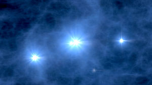
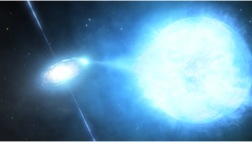
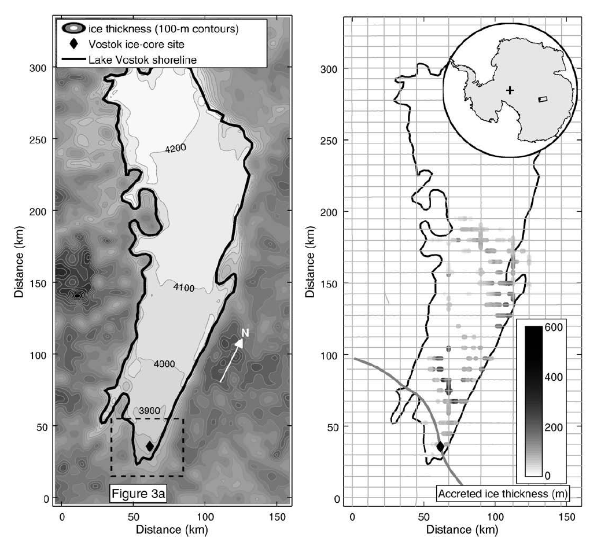
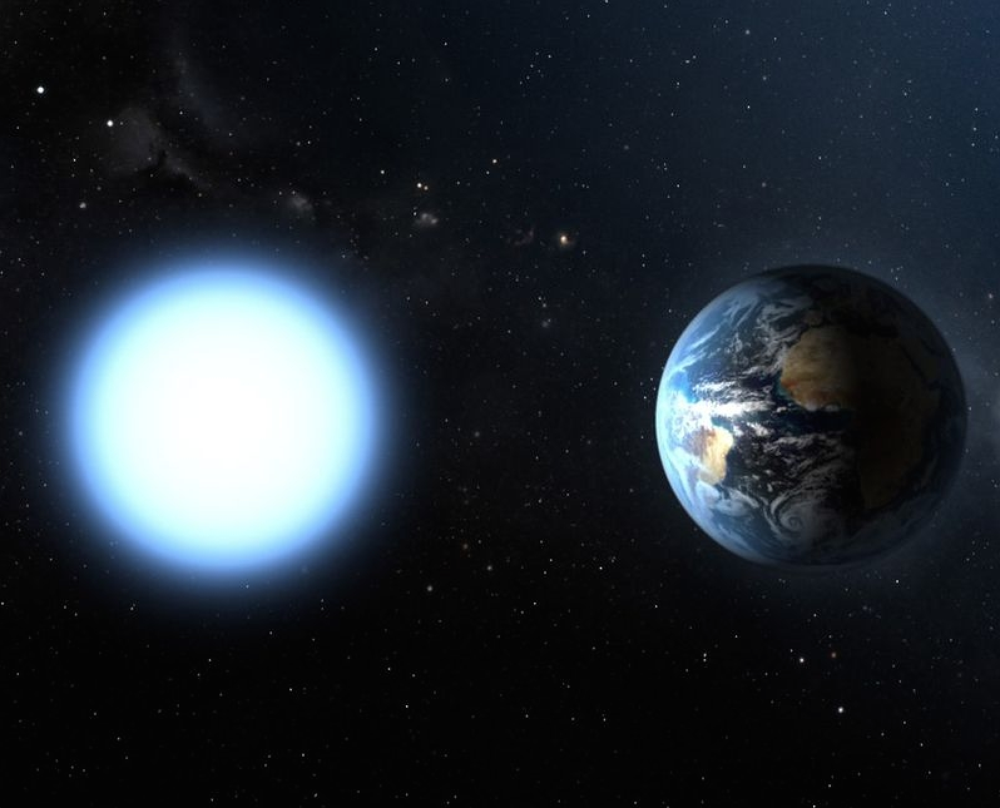
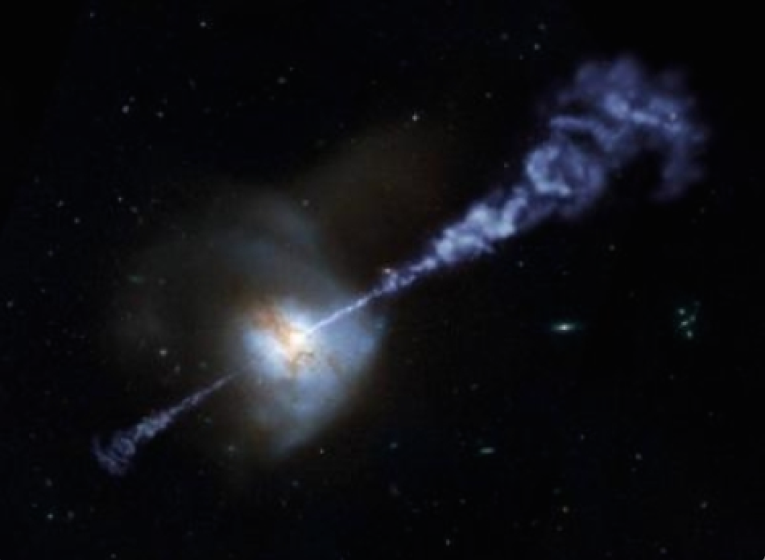
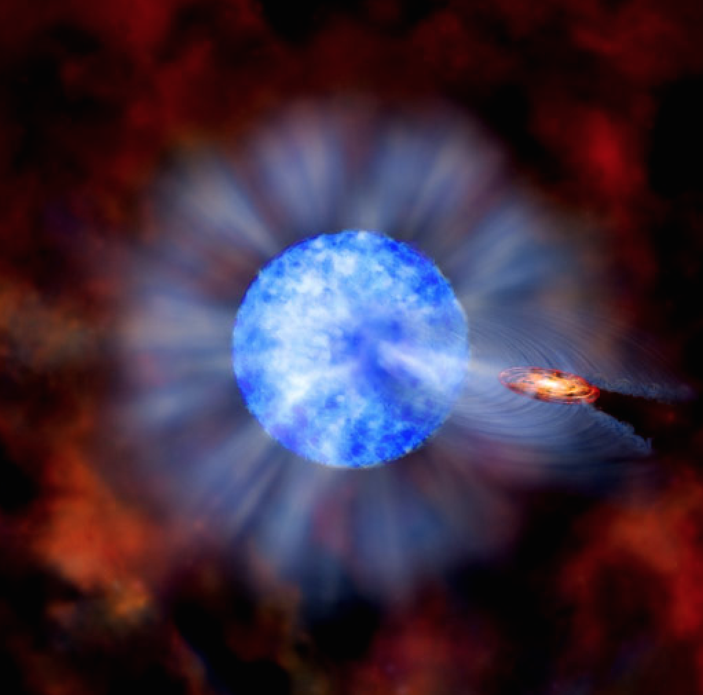

Possible Research Projects
Below are descriptions of the possible research projects you will work on this quarter. You can find a PDF version here. The advisers listed below will present their projects for 5-10 minutes in class on Friday October 3. As part of writing assignment 2, you will rank the three projects you find most interesting, explain why they interest you in a couple of sentences, and let me know via email (eschwiet [at] uw [dot] edu). I will make the final project assignments, spliting you into teams of two, and let you know who your partners and mentors are on Monday October 6th in class. Your project choice will determine whether you follow the python or IDL tutorials.When did the first star in the Universe form?
Advisors: Professor Matt McQuinn and Phoebe Sanderbeck
|  |
The Sun is 4.6 billion years old, having formed 9.2 billion years after the Universe was born. However, we think that stars formed when the Universe was just tens of millions of years old. We should be able to predict the epoch when the first star formed in the observable Universe because the physics that sets this number is relatively well understood. We know that the first star must have formed in a structure called a dark matter halo and that this halo had to be larger than ~10^5 solar masses for the gas to be able to cool, lose energy, and condense into a star. We will use models for the formation of dark matter halos (calibrated with numerical cosmological simulations) to predict when the first halos of these masses formed (which should happen in a very rare, dense location in the Universe). We will then incorporate estimates for how quickly the gas in such structures condensed to form stars. In the end, we will have a prediction for when the first star formed on our light cone along with an error bar for the uncertainty. We will also be in a position to comment on the formation of the first ~10^4 stars per cubic (comoving) megaparsec, up to when the complicated physics of radiation backgrounds becomes important in the star formation process.
Required Skills: This project requires primarily some programming in python (or alternatively the C programming language).
Investigating the Wolf Rayet-Black Hole Binary NGC 300 X-1
Advisor: Dr. Breanna Binder
|  |
NGC 300 X-1 is the brightest X-ray source in the nearby spiral galaxy NGC 300. It is composed of a massive star (about 30 Msol) and a black hole (with a mass of ~10-15 Msol); eventually, this system will form a binary black hole system. In this project, students will analyze a new Chandra X-ray Observatory observation of NGC 300 X-1 in order to study its X-ray variability and spectrum. A second Chandra observation will be obtained in late November, so there is an opportunity to continue the project after Pre-MAP if the student(s) are interested. This project is likely to result in a publication in a major astronomical journal.
Required Skills: UNIX & IDL. You will also learn CIAO & XPEC (with mentor help).
Measuring Oxygen Input for Life in Lake Vostok Using Radar Sounding Data
Advisors: Professor Dale Winebrenner and Paul Kintner
|  |
Ice-covered seas occur in our solar system on Earth, Europa, Ganymede, and Enceladus, and possibly even on Callisto, Titan, Pluto and elsewhere. Given the occurrence of liquid water, a key astrobiological question is then the availability of energy, specifically geochemical energy, to power life in the absence of sunlight in those seas.
The roughly 400 known lakes lying beneath 3-4 km of ice in East Antarctica are analogs to seas in the outer solar system, yet they are presently almost completely unexplored -- we do not even know whether anything at all lives in them, and if so, how organisms make a living (in a geochemical sense). Exploring subglacial lakes on Earth can therefore inform the questions we ask in exploring ice-covered seas in the outer solar system.
In this project, we are trying to constrain a key geochemical input to the largest subglacial lake in Antarctica, Lake Vostok. We know that oxygen from air trapped in glacial ice is deposited into Lake Vostok where the lake lid is melted by heat rising through the water from deep in the Earth, but we don't know very well where the lake lid is melting and where not. Radar sounding may be able to tell us. We'll use data collected on aircraft flights over the lake to infer the temperature profile in the ice, and from that map where melting occurs. Pre-MAP students can help us organize and interpret the 14 GB of radar data in terms of melt rates.
Required Skills: Python. MATLAB experience a plus but certainly not required.
A Brief White Dwarf Planet Search with Apache Point Observatory
Advisor: Brett Morris
|  |
As of September 2014 more than 5000 exoplanets, or planets orbiting stars other than the Sun, have been discovered. The most successful planet discovery method to date is the "transit method", which discovers planets by carefully monitoring the brightness of stars. If a star has an orbiting planet and its orbit brings the planet between the Earth and its host star, we can detect a slight dimming in the brightness of the host star during a "transit event" as the planet blocks out some of the star's light. The Kepler Mission has discovered more than 4000 candidate planets this way, but it mostly focused on searching for planets orbiting "middle-aged" stars like the Sun.
One question that was not answered by the Kepler mission is: what happens to the Kepler planets after their Sun-like host stars die? The Sun will reach the last stage in its life cycle when it becomes a white dwarf -- a very dense, small, hot star, roughly the size of the Earth. In the transition to the white dwarf phase, Mercury, Venus and maybe Earth are likely to be swallowed up by the swollen Sun, but more distant planets may survive. Some white dwarfs have been discovered that have metal pollution in their atmospheres, indicative of planetary material raining onto the surface of the star -- is that planetary material a destroyed planet? Can we find zombie planets that survive the inferno of stellar death around these still white-hot dead stars?
The goal of this project will be to work with previously collected photometry (time-series brightness measurements) from the ARC 3.5 m telescope at the Apache Point Observatory to assess our ability to conduct a white dwarf planet search with the AGILE instrument and to optimize our planet search strategy. The results from this research will be used to write proposals to begin a small survey of bright white dwarfs, looking for planets on short period orbits with the transit method.
Required Skills: UNIX & Python.
The Growth of Supermassive Black Holes in Galaxy Mergers
Advisors: Michael Tremmel and Professor Fabio Governato
|  |
Supermassive black holes with masses of millions to billions of times the mass of our sun exist in the center of most galaxies (including our own!). These monsters are the sources of some of the most energetic events in the Universe. As gas from their host galaxy falls onto a supermassive black hole, it forms a disk of in-falling material. This disk is very dense and becomes very hot as the gas falls further down the black hole’s gravitational potential, transferring that energy into heat and radiation. Because the gravitational field of these massive objects is so great, they can eat gas very quickly and create a lot of energy in the form of light and large outflows of mass (see figure above). The energy released in these events can have important effects on the host galaxy, but the details of this interaction are still very uncertain. A key component of this interaction is how these black holes grow. One major mechanism theorized to drive black hole growth is galaxy mergers. The gravitational interaction of two galaxies can drive strong flows of gas toward their centers, the perfect meal for a supermassive black hole!
For this project, we will study how and how much supermassive black holes grow during galaxy interactions and mergers and the subsequent effects these interactions can have on the host galaxy(ies). To do this, we will utilize data from cosmological simulations of large volumes of the Universe. These simulations provide us with a large sample of realistic galaxies that we can study throughout the history of the Universe with just a few clicks of a mouse (and a good deal of programming). We will study how the interactions and merging of galaxies affect the growth of supermassive black holes and compare our results with observed galaxies to measure the accuracy of our model. In addition, by comparing our theoretical galaxies with those from simulations without black holes, we will be able to isolate some of the major consequences of black hole growth on galaxy evolution.
This project involves a lot of data (our simulations are big, and have high resolution and a lot of galaxies!). The first step will be to find the systems that are the most interesting to study. To do this, we will use a database system that allows us to track the merger history of all of our simulated galaxies. We can choose to look at black hole activity in different galaxies at different times and in different environments, using this database to guide us to systems with interesting interactions. While there are well defined goals and key properties we will look at, there will be a lot of freedom for the students to explore the data (with guidance of course!). This is an exciting field of study with a lot of possibilities and uncertainties! And, we have a lot of awesome data to sift through! This project can easily be continued after Pre-MAP if the students are interested.
Required Skills: UNIX & Python.
Searching for New X-ray Binaries in M33
Advisors: Kristen Garofali and Professor Ben Williams
|  |
M33, also known as the Triangulum galaxy, is the third largest galaxy in the Local Group and has been studied extensively with many radio, optical, and X-ray telescopes. As a nearby, star-forming galaxy it is a prime place to search for high-mass X-ray binaries (HMXBs), systems that consist of a young, massive star orbiting and expelling gas onto a compact object like a neutron star or black hole. To date there are only three such systems known in M33, one of which is an eclipsing black hole binary that contains one of the most massive stellar black holes that has been identified. The discovery and characterization of such HMXB systems can help put constraints on binary star evolution, which itself has wide-ranging impacts in all facets of astronomy. The goal of this project is to discover and possibly characterize at least one new HMXB in M33. This will be accomplished through astrometric alignment of optical (Hubble Space Telescope) and X-ray (Chandra) images of the galaxy. Once the images are aligned you will be searching for clear optical counterparts to the X-ray sources previously identified in a deep Chandra survey of M33. There is the possibility for further characterization of the optical counterpart if you are interested in submitting a proposal to observe the star on the 3.5-m telescope at Apache Point Observatory (APO).
Required Skills: UNIX & IRAF (w/ python).
Variations in Galaxy Shapes and Sizes
Advisors: Lauren Anderson and Professor Tom Quinn
 |
Our universe is filled with diverse galaxies: some are blue spirals like our own milky way, others are red spheres, and some dim blobs. What causes these variations in galaxy morphology, especially for two galaxies of the same mass? For this project, you will use our state of the art cosmological simulation show to the left to investigate what causes these variations in galaxy shapes. Does it depend on the merging history or environment of the galaxy, or maybe its star formation history? You will gain experience in visualizing simulations, analyzing their outputs, and some experience leveraging a database.
Required Skills: UNIX & Python.